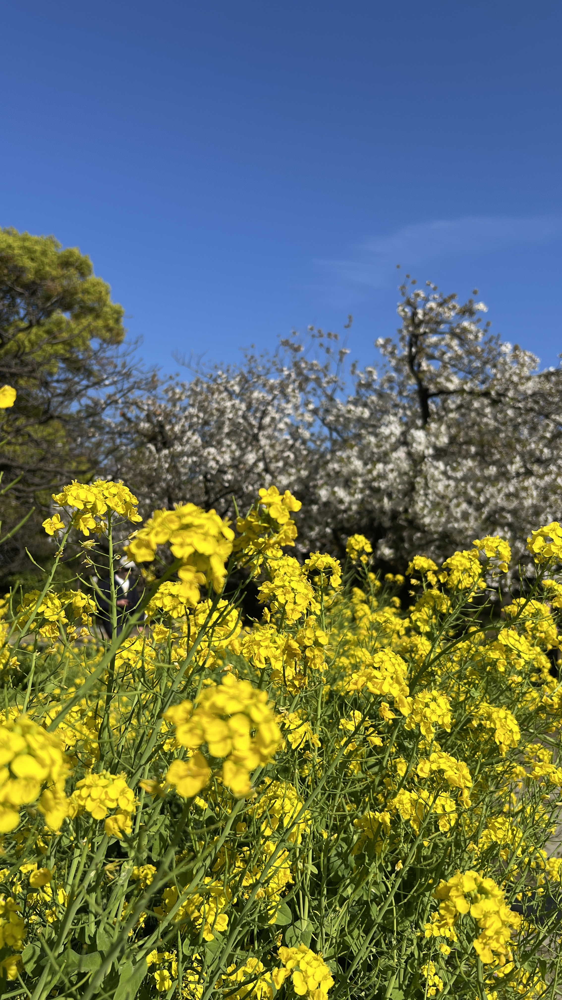
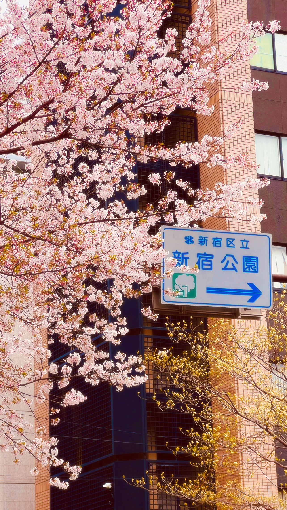
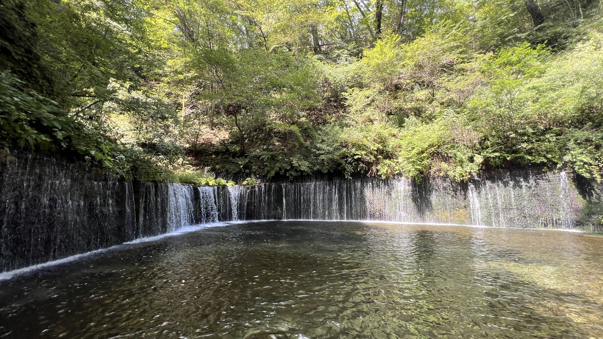
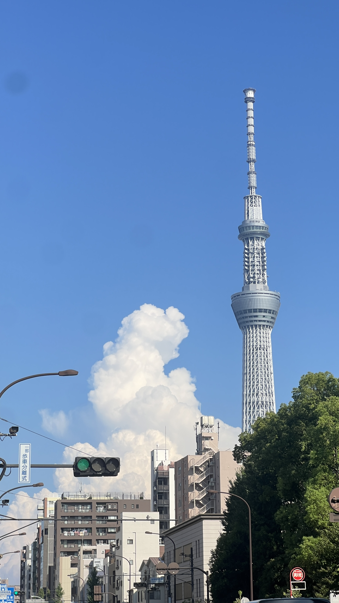
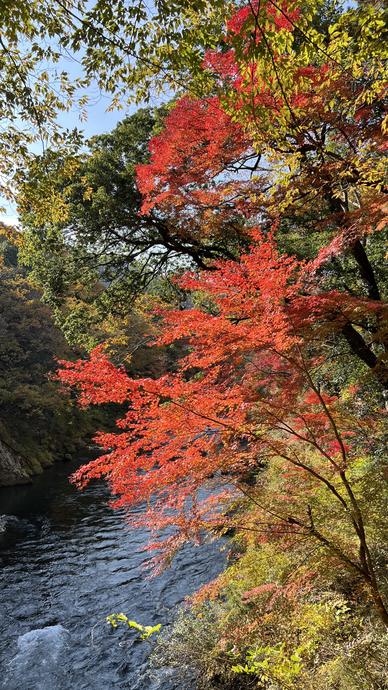
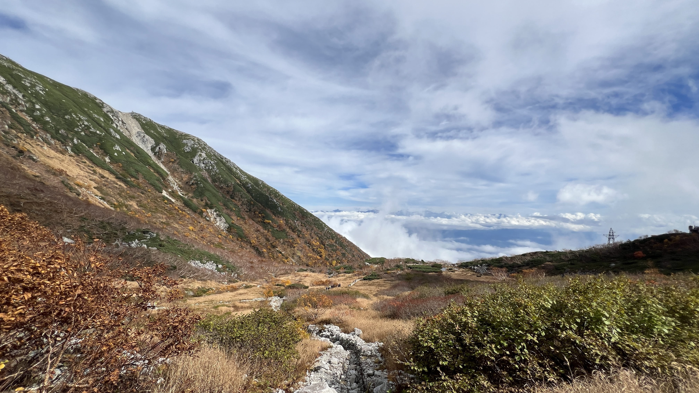
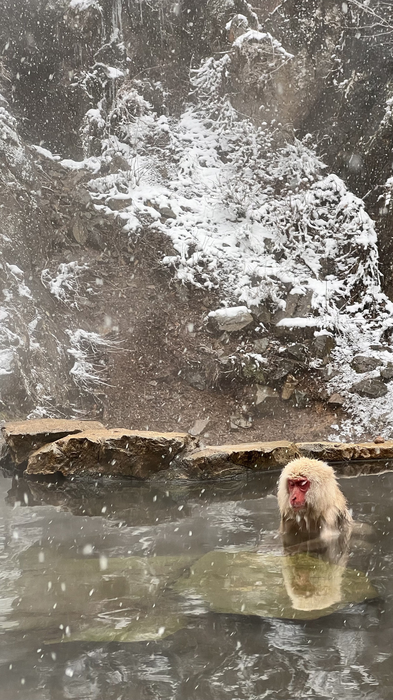

さくら
さくら春 / SPRING
桜色
さくらいろ
SAKURA-IRO
#F4B4C0
満開の桜の花びらを思わせる、ほのかに赤みを帯びた淡い色。
JAPANESE TRADITIONAL COLORS
四季でめぐる、日本の伝統色。
旅先で出会った風景から、季節の色を集めました。写真の中にある八つの伝統色をたどりながら、日本の四季を見つめます。







COLOR COLLECTION
春のやわらかな色から、冬の静けさを映す色まで。気になる一色を選んで、その背景にある物語をご覧ください。
さくら春 / SPRING
さくらいろ
SAKURA-IRO
#F4B4C0
満開の桜の花びらを思わせる、ほのかに赤みを帯びた淡い色。
 わかくさ
わかくさ春 / SPRING
わかくさいろ
WAKAKUSA-IRO
#A8C97F
春に芽吹いたばかりの草のような、明るくみずみずしい黄緑色。
 ひすい
ひすい夏 / SUMMER
ひすいいろ
HISUI-IRO
#38B48B
涼しげな水辺を思わせる、青みを含んだ透明感のある緑色。
 るり
るり夏 / SUMMER
るりいろ
RURI-IRO
#1E50A2
宝石の瑠璃に由来する、深さと鮮やかさをあわせ持つ青色。
 やまぶき
やまぶき秋 / AUTUMN
やまぶきいろ
YAMABUKI-IRO
#F8B500
山吹の花から名付けられた、黄金を思わせる鮮やかな黄色。
 かき
かき秋 / AUTUMN
かきいろ
KAKI-IRO
#ED6D3D
秋に熟す柿の実のような、あたたかみのある深い橙色。
 ぎんねず
ぎんねず冬 / WINTER
ぎんねず
GINNEZU
#91989F
銀のようなほのかな明るさを含む、上品で静かな鼠色。
 すみ
すみ冬 / WINTER
すみいろ
SUMI-IRO
#343434
雪原の影を思わせる、静けさの中に深みを持つ黒色。